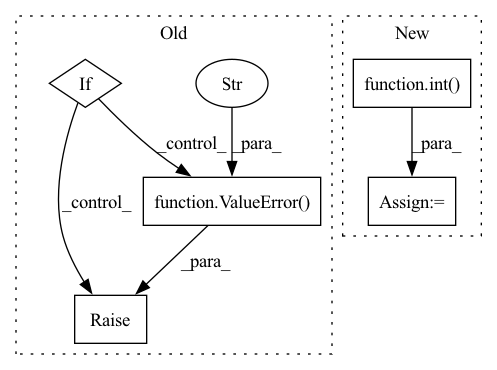

Pattern ID :8950
Before Change
raise ValueError("max_steps must be a non-negative integer")
if max_steps == 0:
return init_val
if max_steps & (max_steps - 1) != 0:
raise ValueError("max_steps must be a power of two" )
init_data = (cond_fun(init_val), init_val)
_, val = _while_loop(cond_fun, body_fun, init_data, max_steps)
return valAfter Change
return cond_fun(val) & (step < max_steps)
init_data = (cond_fun(init_val), init_val, 0)
rounded_max_steps = base ** int( math.ceil(math.log(max_steps, base)))
_, val, _ = _while_loop(_cond_fun, body_fun, init_data, rounded_max_steps, base)
return val
In pattern: SUPERPATTERN
Frequency: 3
Non-data size: 5
Instances Fragment ID: 32757171
Project Name: patrick-kidger/diffrax
Commit Name: 7305660af92bc603d456e4b00806db54fcfd9819
Time: 2021-12-29
Author: 33688385+patrick-kidger@users.noreply.github.com
File Name: diffrax/misc/bounded_while_loop.py
M Class Name: AnonimousClass
N Class Name: AnonimousClass
M Method Name: bounded_while_loop(5)
N Method Name: bounded_while_loop(4)
M Parent Class:
N Parent Class:
M File Name: diffrax/misc/bounded_while_loop.py
N File Name: diffrax/misc/bounded_while_loop.py
M Start Line: 74
M End Line: 78
N Start Line: 10
N End Line: 89
Before Change
if len(split_ratio) < 2 or len(split_ratio) > 3:
raise ValueError("Unrecoginzed number of splits")
if len(split_ratio) == 2:
if self.num_edges < 2:
raise ValueError(
"in split_link_pred num of edges are"
"smaller than number of splitted parts"
)
if len(split_ratio) == 3:
if self.num_edges < 3:
raise ValueError(
"in split_link_pred num of edges are"After Change
edges_train = edges[:num_edges_train]
edges_val = edges[num_edges_train:]
elif len(split_ratio) == 3:
num_edges_train = int( split_ratio[0] * self.num_edges)
num_edges_val = int(split_ratio[1] * self.num_edges)
num_edges_test = self.num_edges - num_edges_train - num_edges_val
if (
(num_edges_train == 0)
or (num_edges_val == 0) Fragment ID: 32757170
Project Name: snap-stanford/deepsnap
Commit Name: e5bf60664637344f137be0810d8ea898d9aab8a5
Time: 2020-12-22
Author: xhe17@stanford.edu
File Name: deepsnap/graph.py
M Class Name: Graph
N Class Name: Graph
M Method Name: split_link_pred(3)
N Method Name: split_link_pred(3)
M Parent Class: object
N Parent Class: object
M File Name: deepsnap/graph.py
N File Name: deepsnap/graph.py
M Start Line: 1253
M End Line: 1288
N Start Line: 1305
N End Line: 1353
Before Change
if len(re_list) == 2:
if output:
print(f"model name is splitted: name {re_list[0]}, layer {re_list[1]}")
if layer:
raise ValueError("Plz don\"t put "layer" in "name" when "layer" parameter is given separately."
f"name: {name}, layer: {layer}" )
name: str = re_list[0]
layer = re_list[1]
else:
layer = default_layer if layer is None else layerAfter Change
if len(re_list) > 2 and re_list[-2] == "x":
assert width_factor is None, ("Plz don\"t put "width_factor" in "name" when "width_factor" parameter is given separately."
f"name: {name}, width_factor: {width_factor}")
width_factor = int( re_list[-1])
else:
layer = default_layer if layer is None else layer
return name, layer, width_factor
Fragment ID: 32757172
Project Name: ain-soph/trojanzoo
Commit Name: 57bd740b9f8ac15bd3d446ba850cd53025e2840f
Time: 2020-12-28
Author: ain-soph@live.com
File Name: trojanvision/utils/__init__.py
M Class Name: AnonimousClass
N Class Name: AnonimousClass
M Method Name: split_name(5)
N Method Name: split_name(4)
M Parent Class:
N Parent Class:
M File Name: trojanvision/utils/__init__.py
N File Name: trojanvision/utils/__init__.py
M Start Line: 7
M End Line: 16
N Start Line: 7
N End Line: 22